La Cérémonie des Walid
Une cérémonie créée par les étudiants,
pour les étudiants.
Le public était là.
Le projet
Quand tout
repose sur
le direct.
La Cérémonie des Walid, c'est une remise de prix née en 2022 au sein du BUT MMI de Laval. Inspirée de Walid, la mascotte du BDE, elle met en lumière les projets les plus remarquables des étudiants : vidéos, sites web, campagnes de communication, portfolios. Année après année, elle est devenue la vitrine de l'IUT de Laval.
Pour cette 4ᵉ édition, le défi était clair : ouvrir l'événement aux quatre départements de l'IUT — MMI, INFO, TC, GB — sans perdre l'identité de ce qui fait la Cérémonie. Chaque détail avait été pensé pour que le live du 27 janvier 2026 se déroule tel que nous l'avions pensé.
Projet de trosième année, la Cérémonie des Walid réunit toutes les compétences acquises au cours du BUT MMI et l'engagement associatif.
Mon rôle
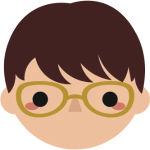
Chef de production- Coordination de l'équipe du Studio
- Direction artistique du live
- Développement du site web
Projet réalisé avec
-
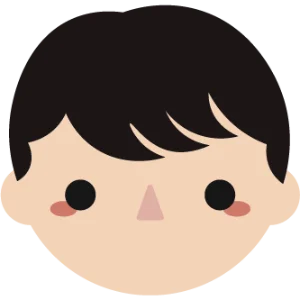
Corentin Jegat -
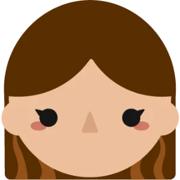
Emma Georgeault -
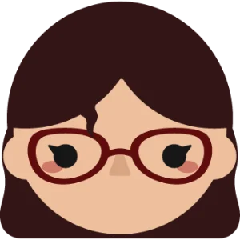
Romane Guillard -
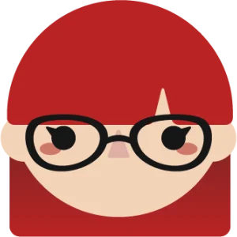
Melia Bourdin
Suivre la Cérémonie des Walid
Préparation
Coordonner
sans improviser.
En tant que chef de production, j'ai coordonné l'ensemble de l'équipe technique du Studio. Répartition des rôles, ateliers techniques, gestion et location du matériel — tout devait être organisé en amont pour que le soir de l'événement, tout se déroule comme prévu. Le live ne pardonne pas l'approximation ni l'improvisation.
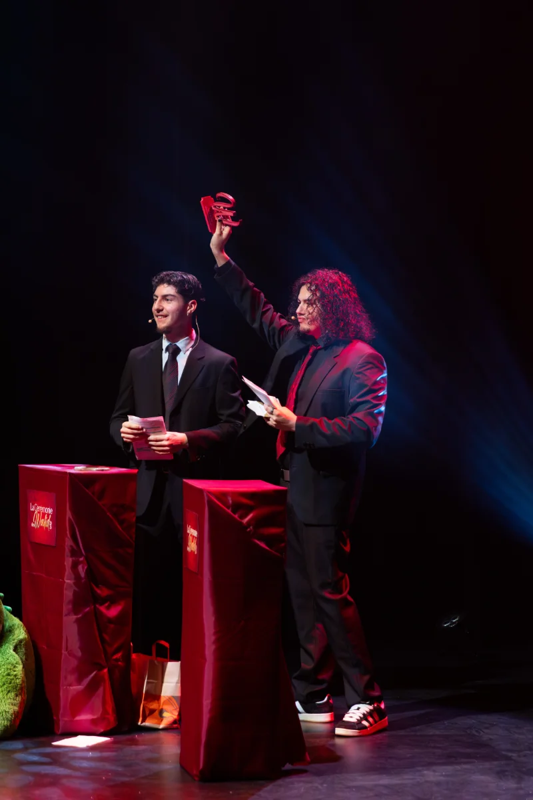
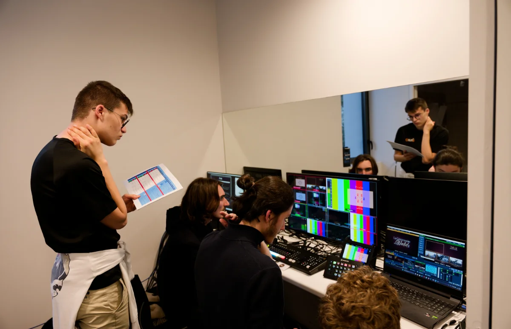
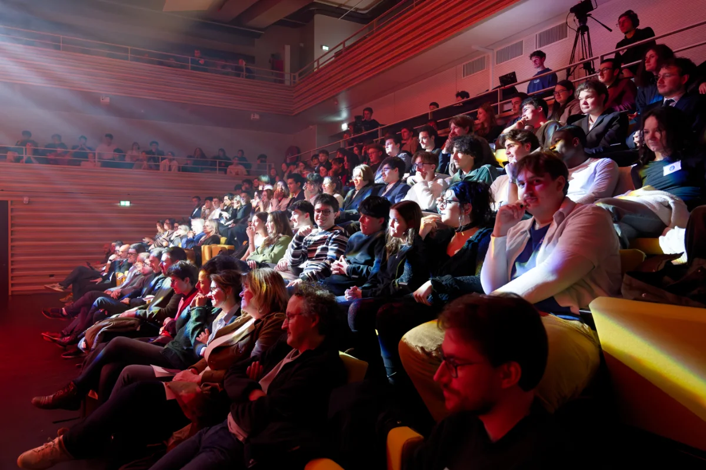
Le site web
Un site,
trois fonctions.
J'ai conçu et développé le site ceremoniedeswalid.fr sur WordPress, avec un design soigné intégrant des animations GSAP pour donner envie aux étudiants de participer. Au-delà du visuel, j'ai développé du code custom pour mettre en place les systèmes de dépôt de projets, de vote par catégorie et la gestion des comptes utilisateurs. Un outil complet, pensé pour l'expérience de bout en bout.
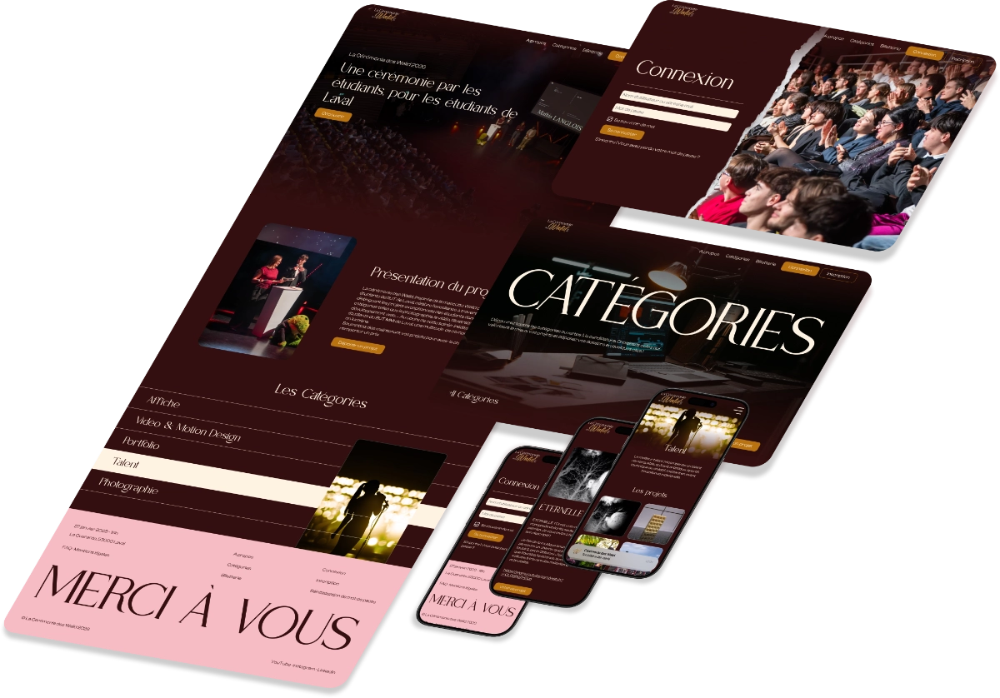
Résultats
Galerie
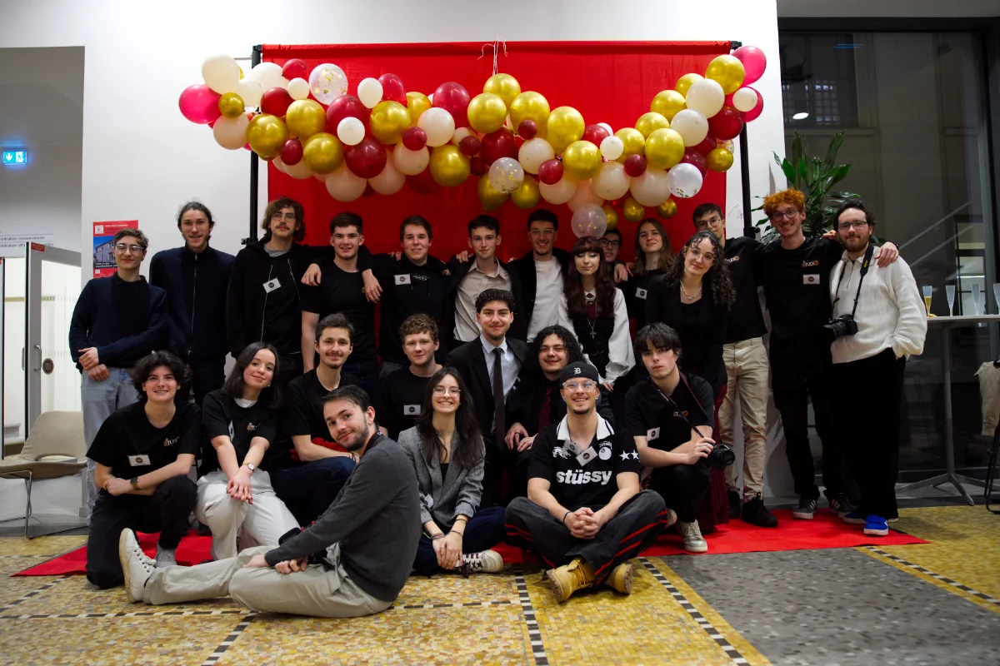
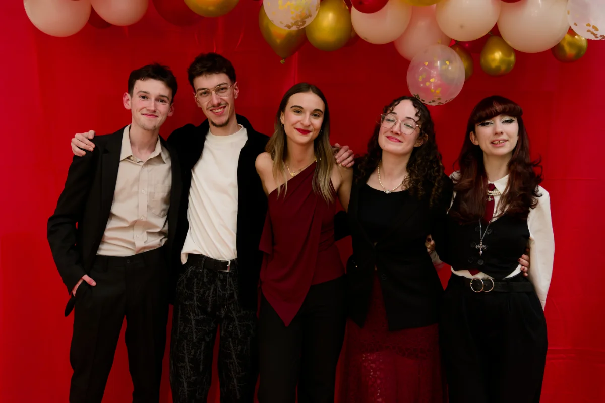
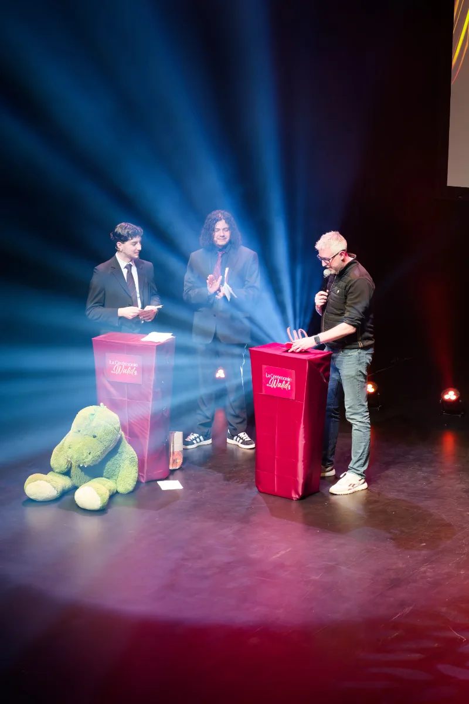
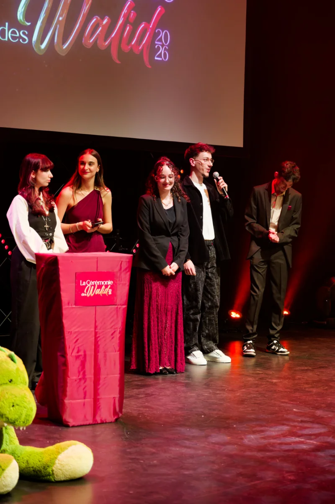
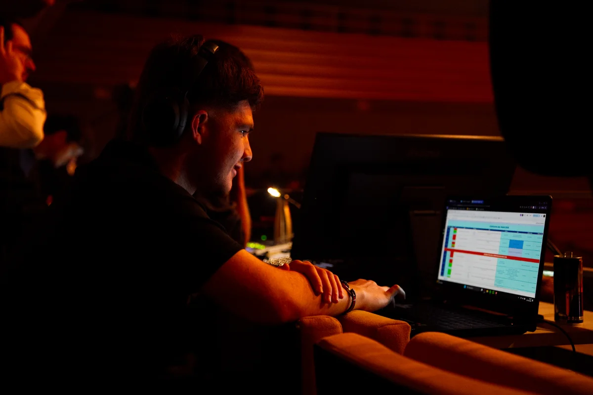
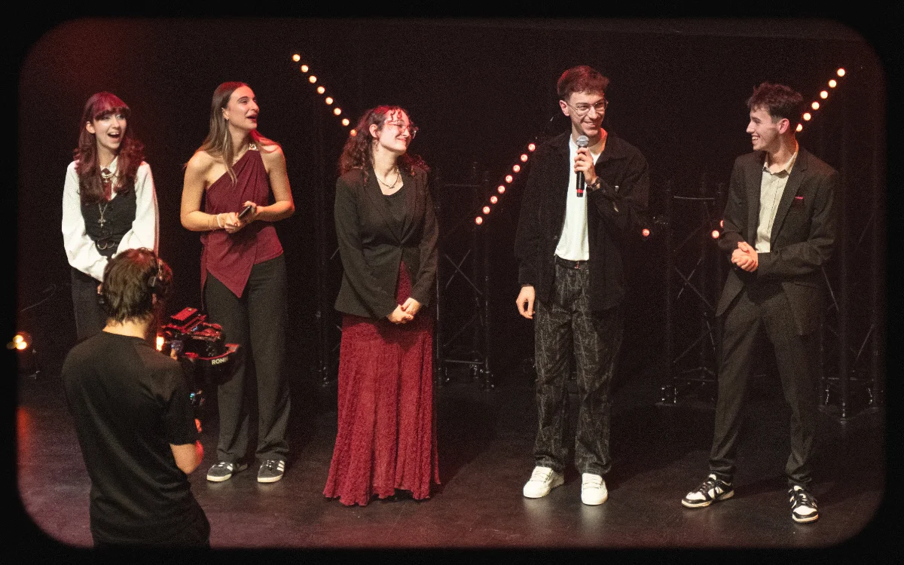
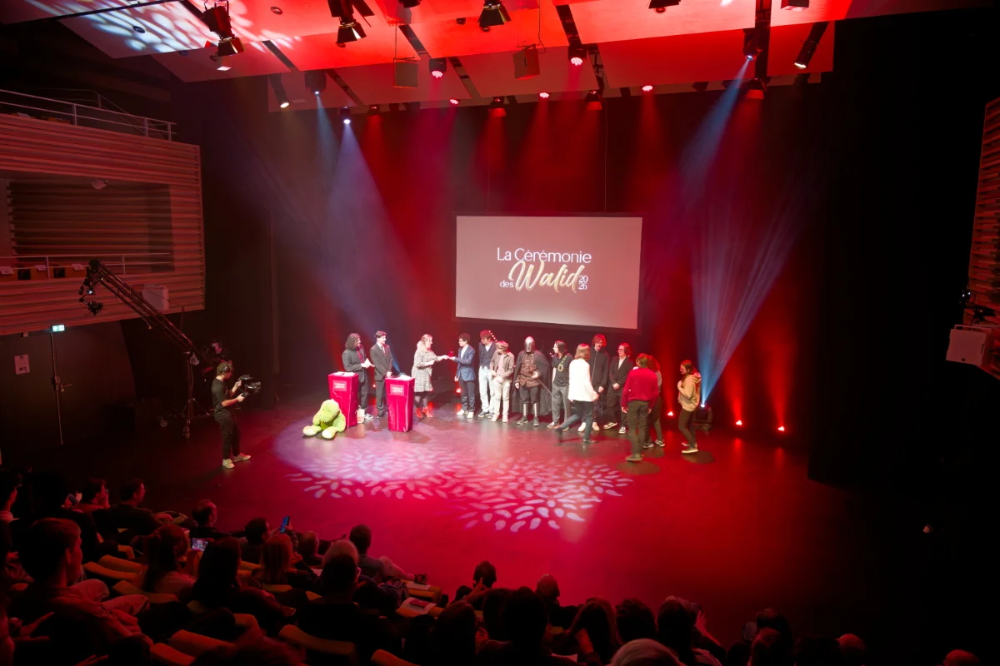